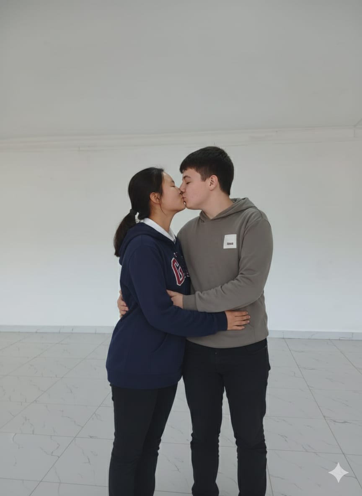

01.09.1939 В этот мрачный день на свет появился Андырка. Судьба быстро вознесла его на вершину: он стал временно исполняющим обязанности аронрашида.
Всё изменилось 11.09.2001. Андырка разработал чудовищный план. В тот день Аскар погиб, а Андырка прибрал к рукам его племя.
В 2012 году мир содрогнулся. Аскар восстал из пепла в Нигерии. В то же время аронрашид принял Андырку в свое привилегированное семейство.
Оставшись без влияния, Андырка нашел свою любовь — Раду.

Время шло, их чувства крепли. Племя аронрашида процветало, внедряя знаменитые «анальные идеи» для продвижения семейства.
Аронрашид застал Раду верхом на Андырке. Не в силах сдерживать порыв, он инициировал тройничок. Вскоре ситуация перевернулась, и в гневе аронрашид нахер выгнал Андырку.
Используя мистическую анальную связь, Андырка выследил Раду. Они помирились и, вопреки всему, обрели свое странное счастье.